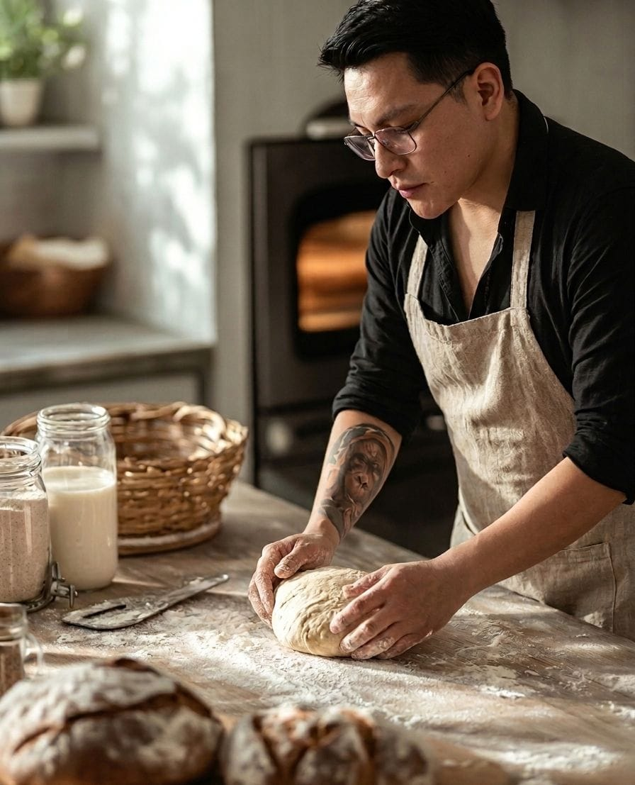
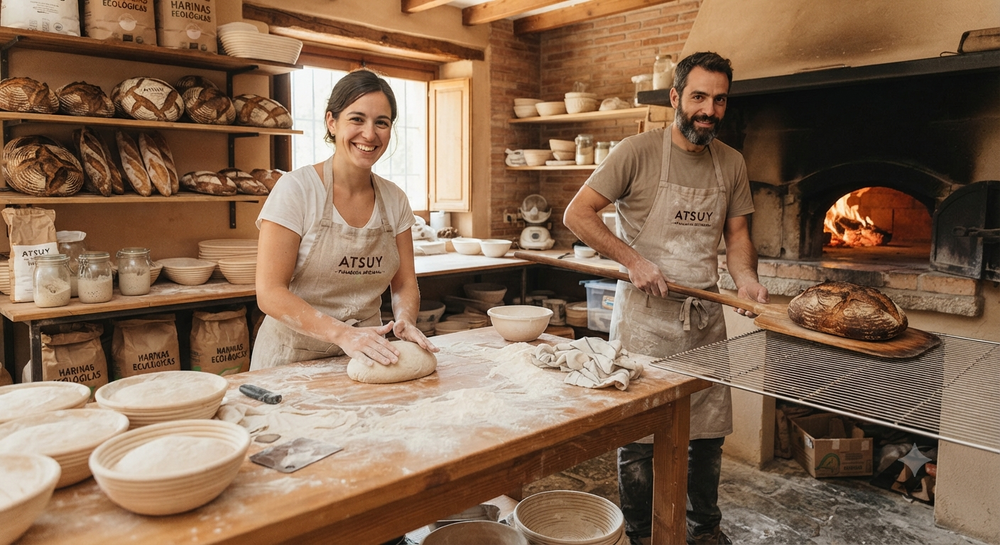

Inicio
"Bienvenidos a Atsuy, un lugar donde el tiempo se detiene para dar vida al verdadero pan artesanal. Nos apasiona la fusión de la paciencia de la fermentación natural con ingredientes elegidos con cuidado, creando piezas únicas que tienen una costra crujiente y un interior suave que es simplemente irresistible No solo hacemos pan; horneamos con el corazón para ofrecerte una experiencia cálida, honesta y llena de sabor en tu mesa."

Quiénes somos
En Atsuy, nos dedicamos a la creación de productos de alta calidad usando técnicas tradicionales. Con paciencia, pasión y un proceso de fermentación natural, te ofrecemos panes que tienen carácter y el verdadero sabor de lo hecho a mano
Ir a otra página
Producto
Variedades de pan:
- Masa madre
- Avellana
- Focaccia
- Ciabatta
- Cibatta con hierbas
Nuestro Servicios
Panaderaia Artesanal Diaria
Elaboración diaria de pan de masa madre y hogazas tradicionales, horneadas a la perfección con ingredientes 100% naturales.
Repostería Fina por Encargo
Creación exclusiva de tartas personalizadas, croissants de mantequilla y postres delicados para realzar tus celebraciones especiales.
Pedidos y Entregas a Domicilio
Un sistema ágil de pedidos en línea que te permite disfrutar de tus productos favoritos recién horneados, ¡directamente en la comodidad de tu hogar!
Nuestra historia
Atsuy es un emprendimiento de panadería artesanal que nació en Manta, y se especializa en el arte de la masa madre. Lo que comenzó como una intensa pasión por la fermentación natural y los procesos que requieren paciencia, ha evolucionado en un proyecto vibrante que convierte ingredientes simples en auténticas joyas gastronómicas. Combinamos técnica precisa y calidad para ofrecer un producto genuino, saludable y con el inconfundible sabor del verdadero pan.
Contacto
Puede ponerse en contacto a través de los siguientes números:
Correo electrónico: inaguicha95@hotmail.es
Teléfono: 0990435794
Dirección: Evenida Francisco de Izazaga. Ciudad: Manta, Pais: Ecuador.